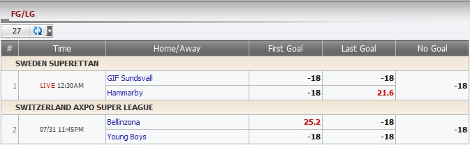

First Goal/Last Goal
Definition:
Show master's win/loss amount for First Goal, Last Goal bet type.

figure 1.1
- On Sweden Superettan, match GIF Sundsvall -vs- Hammarby:
- If Last Goal is made by Hammarby, master will lose 21.6.
- Others case, master will win 18.
- On SWITZERLAND AXPO SUPER LEAGUE, match Bellinzona -vs- Young Boys:
- If First Goal is made by Bellinzona, master will lose 25.2.
- Other cases, master win 18.